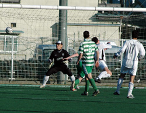
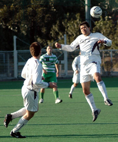
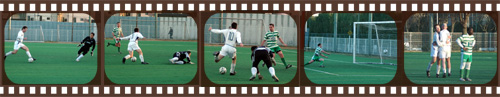
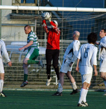

|
Hachioji Park, Sat 27th Jan. Not too tricky a task one might imagine, unlike beating the Kanto Celts who once again took Sala right to the wire.
The Celts who have-along with BFC-been the toughest opposition faced by Sala this season, were once more smited by a last minute backhand down the line from the big man himself. Yes it seems lady luck can barely even muster a grimace for the boys in hoops, but you can talk about luck all season long (Some do…) and the fact is that it tends to even out eventually.
Following that theory though, I would hate to be a team that has still got to play these guys, because they’ve surely got some lottery wins coming up on the park.
It would be unfair on Sala to suggest that it was a lucky win, more that the manner of the goal was fortunate. They certainly did enough in the way of creating chances and having possession to warrant goals, but the sharpened stiletto of recent weeks was replaced by the more familiar dull blade on Saturday.
The first half saw few chances for either team and on the whole was pretty much worth skipping. Brookey’s tight cross from the right saw Giles missile a header inches wide in the only real chance of the half.
Other noteworthy news was Lenny getting halfed left, right and centre by players young enough to be his offspring. ‘Help the Aged’, a Mr. J. Cocker once demanded. Tall order, but at least don’t try and maim them perhaps.
Brookey wandered around aimlessly for ten minutes, Charles ran himself into the ground in a little under three. Luckily for Sala Clarkey, Andres and Brian were running a tight ship in the middle and it’s fair to say that the Celts rarely threatened.
Sala sprung to mid-life after halftime and bared their nicotine stained teeth. Shigeru’s subtle promptings from midfield became more urgent as his hangover wore off and Brookey’s second visit to the pitch saw a return to form. Once the Jelley/Brooke-Smith partnership got going on the right, a goal began to look more and more likely.
Shige’s monstrous effort from thirty-five yards out on the touchline would have been goal of the season, but for the crossbar being in the way.

Bedingfield duly obliged however, a little less than ten minutes from the end. Brookey’s monumentally underwhelming through-pass somehow tied the Celt’s centre-half in knots and he ended up missing it completely. Dhugal needed no second invitation to miscontrol it, wait until some defenders got back on the line, make a hash of rounding the keeper, finish his Airfix model, catch up on the current exchange rates and eventually put it away. Strewth indeed. In fairness though, it does put him on six for the season which is a lofty height rarely reached by the misfiring Sala frontline.
Then came ‘Revenge of the Sid’. As Sala held on for dear life, Celts inevitably had their best period of the game. After a corner was poorly cleared, a Celts midfielder rocketed in a goalbound shot and whoever hit it must have felt that it was in. They had reckoned without young Sidney Lloyd though. He arched his back and threw himself across goal, to claw it past the post in what, tediously, is being described as Gordon Banks-esque effort, but was certainly an act that won the game as surely as the goal at the other end. Should have held it really…
Clarkey, magnanimous and magnificent throughout (And in the last two games too apparently) was again the rock that Sala built their (multi-denominational) church upon and indeed the entire defence deserves the lion’s share of the credit for this one. Well done Brian, Victor, Doug, Ian, Dan and whoever else. Ten games unbeaten for Sala… there, I’ve gone and cursed it.
Report by Roderigo Charles
|